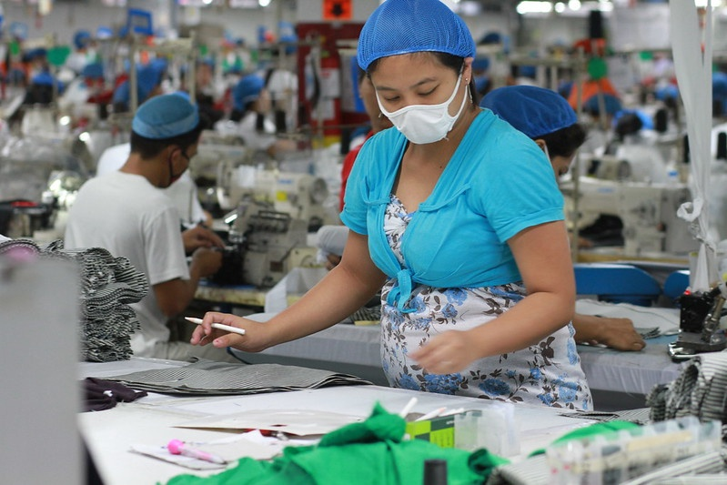

By:Zacarian Sarao - Reporter

Philippine unions fight for living wage
MANILA, PHILIPPINES — The National Economic and Deployment Authoroty (NEDA) on Tuesday said an estimated
40,000 to 140,000 workers may be negatively affected by the recent P35 minimum wage hike in Metro Manila
READ:
Wage hike of P35 for Metro Manila private sector workers approved - DOLE
According to Sec. Arsenio Balisacan, such an event may occur once smaller businesses — or micro,
small, and medium enterprises (MSMEs) — end up closing or reducing their personnel to abide by the new
minimum wage. However, he also clarified that such projected figures are “negligible,” especially relative to
the effects of higher rate adjustments. “It could increase the unemployment rate but again, it’s a very
negligible number; and it could impact something like 40,000 to 140,000, depending on the
region but still again, not as big as one would expect if those were much higher,” Balisacan said.
Read for more:
Today's Paper